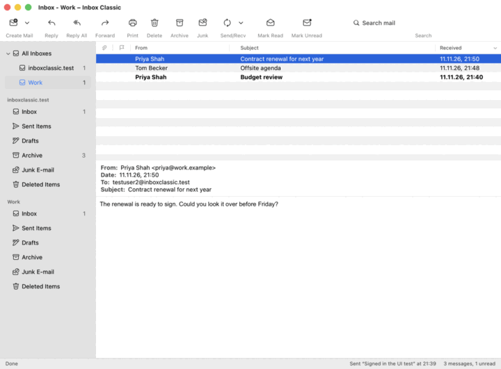

Todas as Caixas de Entrada
Com duas ou mais contas, leia os e-mails de todas as Caixas de Entrada em uma só lista, ou a Caixa de Entrada de uma conta de cada vez.
Todas as Caixas de Entrada aparece no topo da lista de pastas quando você tem duas ou mais contas. Mostra os e-mails da Caixa de Entrada de todas as contas. A lista usa a ordenação escolhida. A coluna Conta indica a conta de cada mensagem.

- Os comandos para responder, encaminhar, mover e excluir atuam sobre a mensagem na conta de origem.
- Uma nova mensagem é enviada da conta da mensagem selecionada.
- Marcar todas como lidas em Todas as Caixas de Entrada marca todas as Caixas de Entrada como lidas. É o único comando no menu de contexto dessa visualização, que reúne pastas de várias contas.
A Caixa de Entrada de cada conta
Abaixo de Todas as Caixas de Entrada, a Caixa de Entrada de cada conta tem sua própria linha, com o nome da conta e o número de mensagens não lidas. Selecione uma linha para ver só essa Caixa de Entrada. É aqui que fica a Caixa de Entrada de cada conta: o nome da conta, mais abaixo, reúne as demais pastas, sem repetir a Caixa de Entrada, os Itens Enviados e os Rascunhos.
As linhas seguem a ordem das suas contas. Para alterar a ordem, arraste uma linha para cima ou para baixo de outra. Consulte Alterar, ordenar e remover contas.
A lista de pastas lembra se você expandiu ou recolheu Todas as Caixas de Entrada. Ela desaparece quando só resta uma conta.
Mensagens enviadas e rascunhos de todas as contas
Todas as mensagens enviadas e Todos os Rascunhos vêm depois de Todas as Caixas de Entrada. Reúnem, respectivamente, as mensagens enviadas e os rascunhos de todas as contas, com a coluna Conta e o destinatário de cada mensagem. Expanda essas visualizações com a seta para mostrar uma linha por conta e ver só os Itens Enviados ou os Rascunhos de uma conta. Essas duas pastas não se repetem sob os nomes das contas mais abaixo.
Um rascunho aberto a partir de Todos os Rascunhos usa a conta em que foi salvo. Essas duas visualizações ficam recolhidas inicialmente, e o Inbox Classic mantém o estado expandido ou recolhido que você escolher.